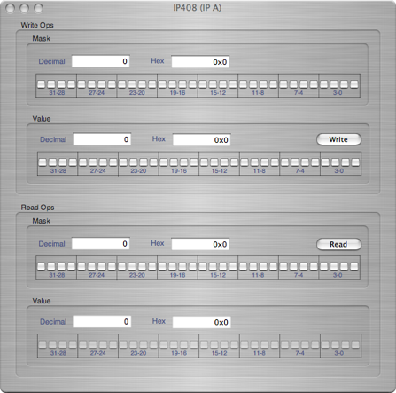

IP320 ADC




A 32-bit mask to limit which bits are changed in a write operation

A 32-bit value to write to hardware

A 32-bit mask to limit which bits are reported in a read operation

The 32-bit value that was read out